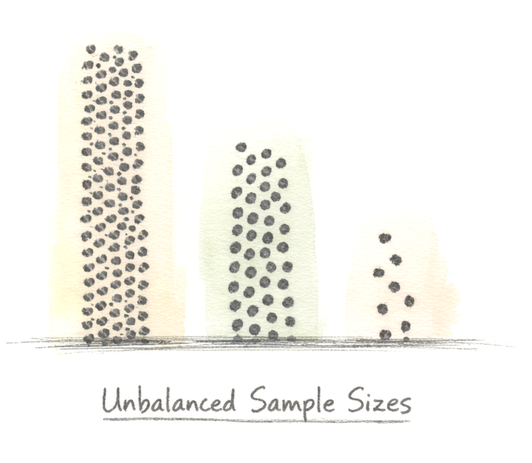

25 GLMM Introduction
25.1 Ecology is non-normal and structured
So far, in this course, we have focused on non-normal data and how GLMs have been designed to handle counts, proportions, and zero-inflated data. But this inherent non-normality of ecology is only one feature with which we must content. As messy as it seems, ecology is also highly structured:
- Spatial structure: Nearby individuals resemble each other
- Temporal structure: Month or years share environmental conditions.
- Relatedness structure: Family members or congeners resemble each other.
These clustering processes generate correlation and violate the assumption of independence that exists for many statistical models.
25.2 Extending to a mixed-effects modeling framework
In this section, we extend the GLM frameworks to mixed-effects models, which allow us to quantify how much variation is associated with structured sources such as:
- Hierarchical data
- Unbalanced designs
- Violations of independence
In the course of our examples, we will show how mixed-effects models can ingest and leverage hierarchical data. In terms of dealing with unbalanced designs, mixed-effects models offer another critical advantage: dealing with unbalanced (or uneven) samples sizes. After all, real datasets often include:
- different numbers of individuals per site
- different numbers of time points per individual
- missing observations
Generalized Linear Mixed Models are robust to unevenness of sample size. To state it clearly: Equal sample sizes are not required. Mixed models use likelihood-based estimation, which handles unequal replication naturally. Balance is supposedly more convenient, but it by any means necessary. Note that this statement only addresses unequal –not sparse– sample sizes.

The last one – non-independence– is perhaps the most serious danger to good inference in ecology. As we mentioned, most ecological data are clustered in space or time, and/or have some biological relationships. Measurements on individuals are repeated. Organisms share environments. You get the picture. If you treat such observations as independent, you are practically ensuring that the models you create do not reflect ecological reality.
By now, the following should be very clear:
Generalized linear mixed models are built for real ecological data.
25.3 Non-independence: the central problem
The independence assumption in most statistical models states that:
Each observation provides unique information.
In real ecological systems, however, this is rarely true. If one \(Y\) value is influenced by another observation (even if indirectly), the assumption of independence is violated. We can divide all cases of non-independence into two broad categories:
- Design-based dependence: this is non-independence caused by the structure of your sampling design (known before analysis)
- Model-based dependence: this is non-independence caused from your statistical model (e.g. assumptions, structure, or misspecification), often revealed after model fitting
Let us go through these in turn.
25.3.1 Design-based dependence (what known in advance)
Design-based dependence is defined as dependence that is explicitly integrated (by you) into your study design and can include design choices (again, by you) such as:
- blocking effects
- split-plot designs
- repeated measures (e.g. multiple samples from one individual at one time or across a time series)
- nested sampling (e.g. multiple individuals within multiple plots within multiple sites)
If you deliberately structured your sampling hierarchically (e.g. many plots within each of many sites), then you have already acknowledged the possibility that entities closer in time or space are more related to each other. Your model must reflect that same structure but do so in an explicitly statistical way. Ignoring such structure counteracts the strengths of a purposeful design. So, please avoid this. In other words, if a grouping labels is in your design (i.e. block, plot), it likely belongs somewhere in your model as a grouping variable.
Individuals, sites, or time points produce related data (similar behaviors of an individual across contexts, similar site conditions, etc.). Though we may have a technically well-replicated study design, ignoring such ecological realities produces what ecologists call pseudoreplication (coined by Hurlburt (1984)), or:
“…the use of inferential statistics to test for treatment effects with data from experiments where either treatments are not replicated (though samples may be) or replicates are not statistically independent.”
Pseudoreplication can lead to a severely over-inflated confidence in one’s results. When the independence assumption is not met, your model thinks you have more information in your signal (relative to the noise) than you really do. So, when the signal-to-noise ratio is falsely elevated, the effect size is also over-inflated. This problem is far from being insignificant or trivial; it directly affects inference.
Of course, not all dependence comes from hierarchical structure (like measurements nested in individuals). Sometimes the main parameters in a model are just flat wrong.
25.3.2 Model-based dependence (that emerges after fitting)
Model-based dependence is defined as dependence that is generated (by your assumptions during your model building). As discussed in previous sections, this can include when:
- there is unanticipated/unrealized spatial autocorrelation
- there is unanticipated/unrealized temporal autocorrelation
- nonlinear effects are assumed to be linear (a very common problem)
- you choose incorrect or unrealistic error structure (data boundaries cause huge issues)
- you omit ecologically important covariates
If the systematic (Signal) component of the model is misspecified, the Signal patterns be appear in the residual structure (Noise). Those patterns can look like correlation among observations. Before adding random effects blindly, always ask yourself whether or not the fixed-effects or error distribution is appropriate.
25.4 Scale as the source of non-independence
As we all know, ecological data are not flat and unidimensional. They are layered across space, stretched across time, and organized across biological/ecological levels. If we ignore that interesting structure, we do not simply violate some formal assumptions. Instead, we actively erase the mechanisms of the data-generating process.
Data multidimensionality is the major insight discussed by Simon Levin (1992) in “The Problem of Pattern and Scale in Ecology” in which he argues that ecological –and perhaps all biological– patterns only make sense relative to the scale at which they are studied. Data-generating processes operating at one scale can generate structure at another. Therefore, if we observe data without acknowledging or respecting the importance of scale, we obscure its signal and inflate its noise.
Shared structure increases the likelihood of common influence, which can create both similarity and correlation. That correlation should not be considered a nuisance, as it is information about how an ecological system is organized. For example:
- Observations that are proximate in space may share a common climate, soil, disturbance regimes, and/orpredators
- Observations that are close in time may share weather, phenology, resource pulses, or predators
- Observations within the same biological unit (i.e. they are more closely related) may share morphology, physiology, or behavior
If multiple measurements are made at a site, a species, or within an individual, they may share unmeasured variation. This is the essence of non-independence.
25.5 Detecting non-independence: How?
If your design contains grouping (and therefore non-independent data points), you do not need to detect it, per se. You already know that your data are structured. However, you are an unsure if there is structure due to unmeasured associations, you can do the following:
25.5.1 Before modeling
- Plot response by grouping factor(s)
- For continuous predictors (e.g., time), plot relationship with the response variable within groups
If some individuals or sites consistently exhibit high or low values (generally non-overlapping distributions), non-independence is very likely. This visual assessment step is powerful. If individuals cluster in different vertical bands when plotted, you are seeing random intercept variation. If slopes differ visually, you may need to account for random variation in slopes.
25.5.2 After modeling (tools like the DHARMa package)
- Examine residual plots (including quantile-quantile plots)
- Test for spatial or temporal autocorrelation
As you know by now, examination of these residual patterns can reveal hidden structure of your model. If residuals are correlated within groups, the model is incomplete. The residuals should look like random noise; there should be no patterns (structure).
So, what are the components of a mixed-effects model?
25.6 Components of a mixed-effects model
You now know that a Generalized Linear Model (GLM) contains only fixed effects. A mixed-effects model, on the other hand, contains both fixed and random effects. That is the entire difference. Let us clearly differentiate between these two types of effects:
25.7 Examples of fixed and random effects
Here are two examples of fixed and random-effects structure in different datasets (click to expand):
25.8 Bibliography for this section
Cited: Hurlbert, S. H. (1984). Pseudoreplication and the design of ecological field experiments. Ecological Monographs, 54(2), 187–211.
Other useful references:
Austin, P. C., & Leckie, G. (2018). The effect of number of clusters and cluster size on statistical power and Type I error rates when testing random effects variance components in multilevel linear and logistic regression models. Journal of Statistical Computation and Simulation, 88(16), 3151–3163. https://doi.org/10.1080/00949655.2018.1504945
Clarke, P. (2008). When can group level clustering be ignored? Multilevel models versus single-level models with sparse data. Journal of Epidemiology & Community Health, 62(8), 752–758. https://doi.org/10.1136/jech.2007.060798
Gelman, A., & Hill, J. (2007). Data analysis using regression and multilevel/hierarchical models. Cambridge University Press.